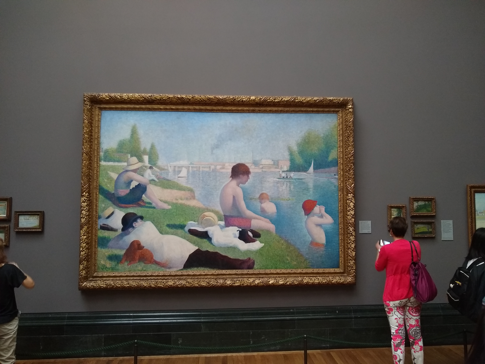
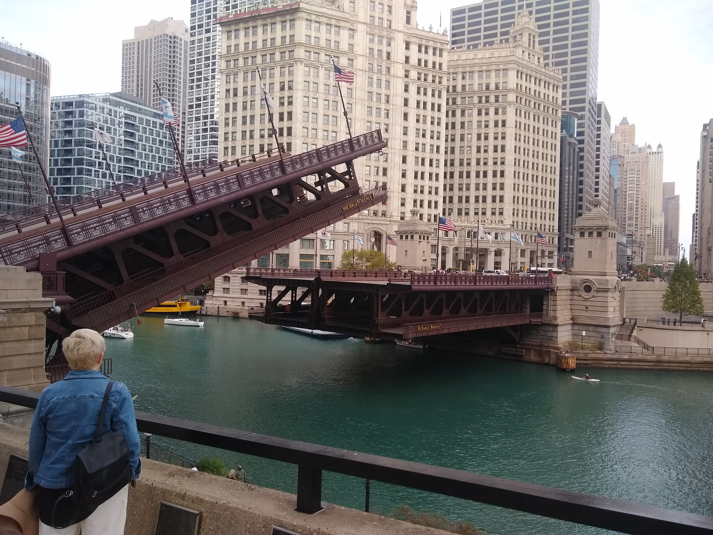
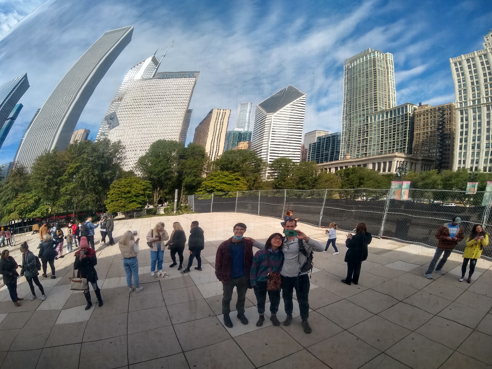

Posted on August 15, 2023 by Patrick Phillips
As we pack up our Chicago apartment and prepare to move back to Rochester, I can't help but reflect on what has been an incredible two-year adventure in the Windy City.
Our move to Chicago in May 2021 was originally motivated by Michaela's acceptance into the MFA program at the Art Institute of Chicago. What started as supporting her artistic dreams turned into one of the most transformative periods of our lives together.
I was fortunate enough to pursue my own academic goals during our time here, earning my Master's in Computer Science from the University of Chicago. The program was challenging and rewarding, and being in such an intellectually stimulating environment pushed me to grow both professionally and personally.
One of the biggest surprises about Chicago was discovering that it sits right on Lake Michigan. I honestly had no idea how prominent the lake would be in our daily lives! The lakefront quickly became our favorite part of the city.
"Living next to Lake Michigan was like having an ocean in the middle of the Midwest. We never got tired of those sunrises over the water."
We spent countless hours biking along the lakefront trail - from Lincoln Park all the way down to Promontory Point and beyond. There's something magical about being able to hop on your bike and ride for miles along the water, with the Chicago skyline as your backdrop.
Summer days were often spent at the beach. North Avenue Beach became our go-to spot for swimming, reading, and just soaking up the sun. I'll never forget those perfect July evenings when the lake was warm enough for a sunset swim.
Coming from Rochester, NY, we thought we knew cold winters. Chicago definitely tested that assumption! But honestly, the cold wasn't as much of a shock as we expected. If anything, those long winter months became the perfect excuse to spend time indoors with the amazing friends we made.
Speaking of friends - Michaela has always been the social butterfly between the two of us. She made connections everywhere we went: at the Art Institute, in our neighborhood, at coffee shops. I joke that I had to marry her just to borrow all her friends, but there's some truth to that!

One of the most special moments of our Chicago years was getting married at Ping Tom Park in Chinatown. The park's beautiful pagoda and skyline views provided the perfect backdrop for our ceremony. It felt so right to make that commitment in a city that had become such an important part of our story together.

Living in Chicago gave us our first real taste of big city life. The public transportation, the diverse neighborhoods, the incredible food scene, the museums and cultural events - it was all new and exciting for us.
Some of my favorite memories include:
As much as we loved our time in Chicago, we've made the decision to move back to Rochester to be closer to both of our families. There's something to be said for having that support system nearby, and we're excited about this next chapter.
But Chicago will always hold a special place in our hearts. It's where we both grew academically and professionally, where we got married, where we learned to navigate city life together, and where we made some lifelong friendships.
Thank you, Chicago, for two incredible years. We'll be back to visit soon!